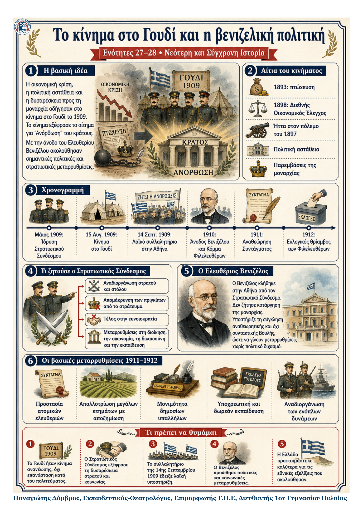

Δεν βρέθηκε η λέξη ή η φράση μέσα στην ενότητα.
1Η βασική ιδέα
Η οικονομική κρίση, η ήττα του 1897, η πολιτική αστάθεια και οι παρεμβάσεις της μοναρχίας προκάλεσαν έντονη δυσαρέσκεια. Το κίνημα στο Γουδί το 1909 εξέφρασε το αίτημα για «Ανόρθωση» του κράτους. Η άφιξη του Ελευθερίου Βενιζέλου οδήγησε σε πολιτική ανανέωση, στο Σύνταγμα του 1911 και στην αναδιοργάνωση της χώρας πριν από τους Βαλκανικούς πολέμους.
2Από την κρίση στο κίνημα και στις μεταρρυθμίσεις
| Το κίνημα στο Γουδί (1909) | Η βενιζελική πολιτική (1910–1912) |
|---|---|
| Αίτια: πτώχευση, ΔΟΕ, ήττα του 1897, οικονομική ύφεση, πολιτική αστάθεια και βασιλικές παρεμβάσεις. | Στόχος: εκσυγχρονισμός του κράτους, κοινωνικές μεταρρυθμίσεις και στρατιωτική προετοιμασία. |
| Μάιος 1909: ιδρύθηκε ο Στρατιωτικός Σύνδεσμος από κατώτερους αξιωματικούς. | 1910: ιδρύθηκε το Κόμμα των Φιλελευθέρων και κέρδισε την πλειοψηφία. |
| 15 Αυγούστου 1909: κίνημα στο Γουδί με αρχηγό τον Νικόλαο Ζορμπά. | 1911: αναθεώρηση του Συντάγματος και ενίσχυση των ατομικών ελευθεριών. |
| Κύρια αιτήματα: αναδιοργάνωση στρατού, κατάργηση ευνοιοκρατίας και μεταρρυθμίσεις σε διοίκηση, οικονομία, δικαιοσύνη και εκπαίδευση. | Μεταρρυθμίσεις: μονιμότητα δημοσίων υπαλλήλων, υποχρεωτική δωρεάν εκπαίδευση και δυνατότητα απαλλοτρίωσης μεγάλων κτημάτων. |
3Χρονογραμμή
| 15 Αυγ. 1909 Κίνημα στο Γουδί |
→ | 14 Σεπτ. 1909 Λαϊκό συλλαλητήριο |
→ | 1910 Άνοδος Βενιζέλου |
→ | 1911–1912 Μεταρρυθμίσεις και πολιτικός θρίαμβος |
|---|
4Τι πρέπει να θυμάμαι
Το κίνημα στο Γουδί προκλήθηκε από οικονομική, πολιτική και στρατιωτική κρίση.
Ο Στρατιωτικός Σύνδεσμος ζητούσε κυρίως αναδιοργάνωση του στρατού και «Ανόρθωση» του κράτους.
Η λαϊκή υποστήριξη εκφράστηκε στο μεγάλο συλλαλητήριο της 14ης Σεπτεμβρίου 1909.
Ο Βενιζέλος επέλεξε αναθεωρητική και όχι συντακτική Βουλή, αποφεύγοντας σύγκρουση με τη μοναρχία.
Το Σύνταγμα του 1911 και οι μεταρρυθμίσεις ανανέωσαν το κράτος και προετοίμασαν τη χώρα για τις επερχόμενες εξελίξεις.
